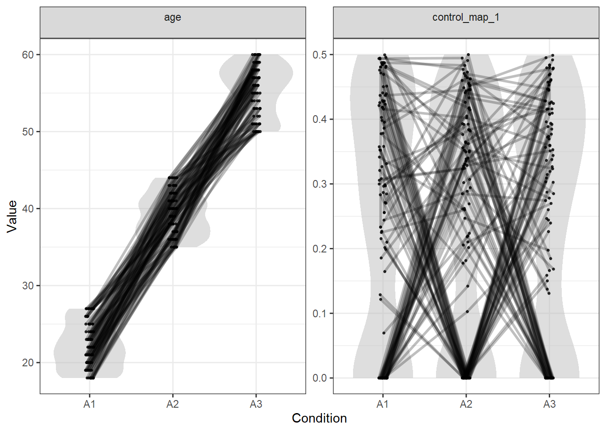
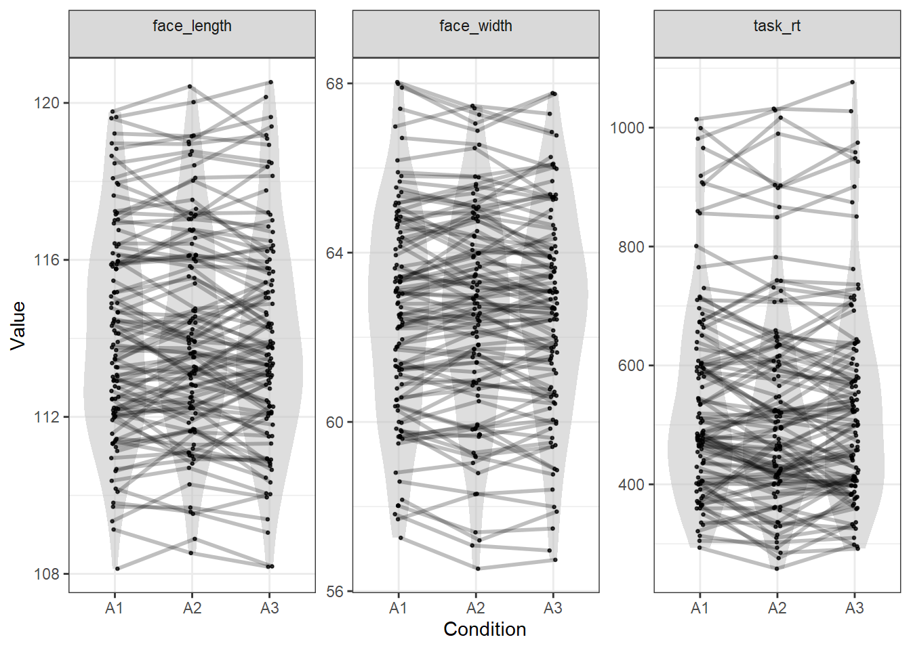

Rather than matching with variable-specific tolerances, you might want to match using Euclidean distance in all variables. This example shows how you can adapt the examples shown so far to match in Euclidean distance. For an explanation of Euclidean distance, see this vignette.
library(tidyverse)
library(LexOPS) # package with functions for item-wise matchingstim_pool <- read_csv("stim_pool.csv")When you match in Euclidean distance, you can use a single tolerance to match all variables simultaneously. Here is an example, controlling for the same variables as in 03 - Matching >2 Conditions, but matching the numeric variables in 3D Euclidean space.
To match in Euclidean distance, we can just use control_for_euc(). LexOPS will by default scale all values by their SD to give them equal weighting, before calculating the distances. This means that matching by ±0.5 in Euclidean distance is comparable to matching by ±0.5 SDs:
stim <- stim_pool %>%
set_options(id_col = "stim_id") %>%
# create the three levels of age
split_by(age, 1:28 ~ 35:45 ~ 50:100) %>%
# control for all variables
control_for_euc(c(face_width, face_length, task_rt), -0.5:0.5) %>%
control_for(gender) %>%
generate(n=100, seed=42, match_null="inclusive")## Generated 5/100 (5%). 5 total iterations, 1.00 success rate.
Generated 10/100 (10%). 12 total iterations, 0.83 success rate.
Generated 15/100 (15%). 19 total iterations, 0.79 success rate.
Generated 20/100 (20%). 28 total iterations, 0.71 success rate.
Generated 25/100 (25%). 45 total iterations, 0.56 success rate.
Generated 30/100 (30%). 55 total iterations, 0.55 success rate.
Generated 35/100 (35%). 65 total iterations, 0.54 success rate.
Generated 40/100 (40%). 78 total iterations, 0.51 success rate.
Generated 45/100 (45%). 92 total iterations, 0.49 success rate.
Generated 50/100 (50%). 99 total iterations, 0.51 success rate.
Generated 55/100 (55%). 108 total iterations, 0.51 success rate.
Generated 60/100 (60%). 117 total iterations, 0.51 success rate.
Generated 65/100 (65%). 128 total iterations, 0.51 success rate.
Generated 70/100 (70%). 133 total iterations, 0.53 success rate.
Generated 75/100 (75%). 144 total iterations, 0.52 success rate.
Generated 80/100 (80%). 151 total iterations, 0.53 success rate.
Generated 85/100 (85%). 156 total iterations, 0.54 success rate.
Generated 90/100 (90%). 171 total iterations, 0.53 success rate.
Generated 95/100 (95%). 185 total iterations, 0.51 success rate.
Generated 100/100 (100%). 197 total iterations, 0.51 success rate.As before, this gives us a list of matched triplets of young, middle-aged, and old faces. Each row has a young face A1, a middle-aged face A2, and an old face A3.
stim## # A tibble: 100 x 5
## item_nr A1 A2 A3 match_null
## <int> <chr> <chr> <chr> <chr>
## 1 1 face_4884 face_1629 face_3560 <NA>
## 2 2 face_3891 face_564 face_1248 <NA>
## 3 3 face_2107 face_3512 face_1245 <NA>
## 4 4 face_3143 face_2048 face_3766 <NA>
## 5 5 face_1605 face_1219 face_98 <NA>
## 6 6 face_2161 face_2274 face_4318 <NA>
## 7 7 face_3570 face_3825 face_2957 <NA>
## 8 8 face_311 face_2762 face_3089 <NA>
## 9 9 face_3282 face_1794 face_3257 <NA>
## 10 10 face_2687 face_4909 face_1919 <NA>
## # ... with 90 more rowsWe can check the values for each item with long_format():
long_format(stim)## # A tibble: 306 x 7
## item_nr condition match_null stim_id gender age control_map_1
## <int> <chr> <chr> <chr> <chr> <dbl> <chr>
## 1 1 A1 <NA> face_4884 m 19 0
## 2 1 A2 <NA> face_1629 m 36 0.460040186428965
## 3 1 A3 <NA> face_3560 m 54 0.428218541284003
## 4 2 A1 <NA> face_3891 f 26 0.493779127931998
## 5 2 A2 <NA> face_564 f 41 0.494514082260001
## 6 2 A3 <NA> face_1248 f 54 0
## 7 3 A1 <NA> face_2107 m 19 0.421238970862593
## 8 3 A2 <NA> face_3512 m 43 0
## 9 3 A3 <NA> face_1245 m 55 0.356592103417749
## 10 4 A1 <NA> face_3143 f 21 0
## # ... with 296 more rowsWe can look at the quality of the matching of the numeric values with plot_design(). Here, control_map_1 contains the Euclidean distance values (technically it shows only one third of the values, since our matching was inclusive):
plot_design(stim)
To check the matching of the variables that the Euclidean distance is calculated from, we can pass the variables to plot_design():
plot_design(stim, c("face_width", "face_length", "task_rt"))
As you can see, all variables are matched similarly closely.